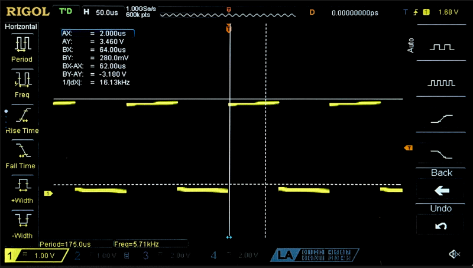

Lab 5: Interrupts
Introduction
This report outlines the design of interrupt based firmware to calculate the angular velocity of a DC motor using quadrature encoders
Design methodology
To ensure maximum accuracy accross all speeds, we use rising and falling edge interrupts for both quad encoders, and then use the values values of the two quad encoder signals to determine the direction of rotation
Timing design and calculations
To find the rotation speed of the motor, I have a variable that stores the number of IRQs that have occured which is incremented in the interrupt handlers for the A and B quad encoder signals. To turn this count into a speed, I have a while loop in my main function that resets the counter and an internal timer, waits for the timer to surpass 1 sample period (200 ms), then does the following calculation to find the number of revolutions per second
\[ M (Pulses) = \frac{N (Interrupts)}{4 (Interrupts/Pulse)} \]
\[ RPS = \frac{\frac{M (Pulses)}{408 (Pulses/Rev)}}{\frac{P (ms)}{1000 (ms/s)}} \]
Where N is the number of interrupts counted, M is the number of pulses, and P is the sample period in milliseconds.
This methodology was implemented into a program with the following process flow diagram.
Timing Verification
To verify the timing calculations above, I used an oscilliscope to measure the period of a quad encoder pulse, and the used the known value of 408 pulses/rev to find the true RPS.
\[ RPS = \frac{F (pulse/s)}{408 (pulse/rev)} = \frac{462 (pulse/s)}{408 (pulse/rev)} = 1.1326 rev/s \]
While this trace was taken, the output terminal reported an RPS of ~1.15, which is approximately equal to the true value calculated above.
Technical Documentation
The SystemVerilog source code for this lab can by found on my github page
Schematic
The schematic in figure 4 demonstrates the simple wiring for the quad encoder to the motherboard.
Results and discussion
The design accurately displayed the angular speed of the motor and direction of rotation across a wide range of speeds.
This lab took roughly 10 hours.
Comparison with polling
To investigate the advantage of interrupt based timing calculations to polling, I repeated this assignment to use polling instead of interrupts, and in the main while loop toggled a pin to probe the frequency of this sampling.

Since this pin toggles every time the main while loop cycles, one half period is the sample period for this polling based design. To ensure that polling does not miss any pin transition events, this sample frequency must be at least twice that of the quad encoders (per Shannons Theorem).
This means that the maximum pulses per second is 2 times the polling frequency, or 11.62 kHz. Finally, since there are 408 pulses per revolution, the maximum revolutions per second is
\[ RPS \le \frac{11620 (pulses/s)}{408 (pulses/rev)} = 28.48 (rev/s) \]
So polling should be adequate for the operating range of the motor.
AI Prototype
I gave MS Bing the following prompt:
“Write me interrupt handlers to interface with a quadrature encoder. I’m using the STM32L432KC, what pins should I connect the encoder to in order to allow it to easily trigger the interrupts?”
And it produced the following code:
// --- Initialization ---
void Encoder_Init(void) {
// Enable GPIOA and TIM2 clocks
RCC->AHB2ENR |= RCC_AHB2ENR_GPIOAEN;
RCC->APB1ENR1 |= RCC_APB1ENR1_TIM2EN;
// Configure PA0, PA1 as AF1 (TIM2_CH1, TIM2_CH2)
GPIOA->MODER &= ~((3 << (0*2)) | (3 << (1*2))); // clear mode
GPIOA->MODER |= (2 << (0*2)) | (2 << (1*2)); // AF mode
GPIOA->AFR[0] |= (1 << (0*4)) | (1 << (1*4)); // AF1
// Configure TIM2 in encoder mode
TIM2->SMCR = TIM_SMCR_SMS_0 | TIM_SMCR_SMS_1; // Encoder mode 3 (count on both TI1 and TI2)
TIM2->CCMR1 = (1 << 0) | (1 << 8); // CC1S=01, CC2S=01 (inputs)
TIM2->CCER = 0; // Rising edge polarity
TIM2->ARR = 0xFFFFFFFF; // Max count
TIM2->CNT = 0; // Reset counter
// Enable update interrupt
TIM2->DIER |= TIM_DIER_UIE;
NVIC_EnableIRQ(TIM2_IRQn);
// Start timer
TIM2->CR1 |= TIM_CR1_CEN;
}
// --- Interrupt Handler ---
void TIM2_IRQHandler(void) {
if (TIM2->SR & TIM_SR_UIF) { // Update interrupt flag
TIM2->SR &= ~TIM_SR_UIF; // Clear flag
// Handle overflow/underflow here
}
}
#define ENCODER_CPR (PPR * 4) // Example: 1024 PPR encoder, x4 decoding
volatile int32_t last_count = 0;
volatile float rps = 0.0f;
void SysTick_Handler(void) {
int32_t current = TIM2->CNT;
int32_t delta = current - last_count;
last_count = current;
// Handle wraparound (TIM2 is 32-bit, so usually not needed unless very long intervals)
// delta is signed, so negative means reverse rotation
float revolutions = (float)delta / ENCODER_CPR;
rps = revolutions / (SAMPLE_PERIOD/1000);
}
Which is different from any approach I have seen my peers pursue in the lab. Bing claims that this makes use on built in hardware encoder handling that is more efficient than counting interrupts.
All I had to do was make minor edits and write a simple main function to begin testing this code. While this approach may have been viable, I could not get it to work and Bing was not helpful in debugging.
Overalll, my impression is that this tool is great for ideating general approaches, but the implementation of those approaches are better left to the engineer, since it is incredibly difficult to debug another “person’s” code that you had no part in writing.
I see myself using AI in the future only to give me ideas on how to go about solving a problem, not to try and solve the problem for me.